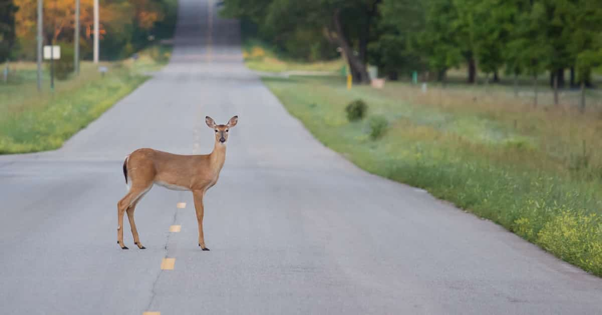

Rogue Deer Causes Traffic Jam
This past Saturday, October 20th 2018 Preston area drivers experienced a 3 hour traffic delay on interstate 91. This delay was not caused by an accident or the high volume of drivers. No, this delay was caused by Dan the deer. Locals were not happy when he refused to move out of the way and this is not the first time an incident like this has occured. No word yet from Dan the deer on his reasoning behind holding up traffic.